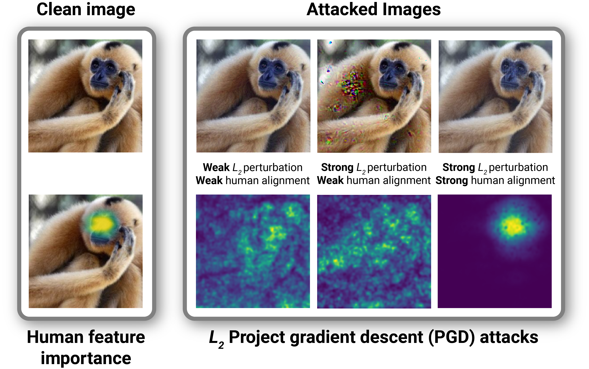

Adversarial Alignment: breaking the trade-off between the strength of an attack and its relevance to human perception
Department of Cognitive, Linguistic, & Psychological Sciences, Brown University, Providence, RI, USA
Carney Institute for Brain Science, Brown University, Providence, RI, USA
Department of Computer Science, Brown University, Providence, RI, USA
Institut de Recherche Technologique Saint-Exup'ery, Toulouse, France
Artificial and Natural Intelligence Toulouse Institute (ANITI), Toulouse, France
Read our paper » View our GitHub »
Results
·
Model Info
·
Harmonization
·
ClickMe
·
Serre Lab @ Brown
Abstract¶

Deep neural networks (DNNs) are known to have a fundamental sensitivity to adversarial attacks, perturbations of the input that are imperceptible to humans yet powerful enough to change the visual decision of a model. Adversarial attacks have long been considered the "Achilles' heel" of deep learning, which may eventually force a shift in modeling paradigms. Nevertheless, the formidable capabilities of modern large-scale DNNs have somewhat eclipsed these early concerns. Do adversarial attacks continue to pose a threat to DNNs?
In this study, we investigate how the robustness of DNNs to adversarial attacks has evolved as their accuracy on ImageNet has continued to improve. We measure adversarial robustness in two different ways: First, we measure the smallest adversarial attack needed to cause a model to change its object categorization decision. Second, we measure how aligned successful attacks are with the features that humans find diagnostic for object recognition. We find that adversarial attacks are inducing bigger and more easily detectable changes to image pixels as DNNs grow better on ImageNet, but these attacks are also becoming less aligned with the features that humans find diagnostic for object recognition. To better understand the source of this trade-off and if it is a byproduct of DNN architectures or the routines used to train them, we turn to the neural harmonizer, a DNN training routine that encourages models to leverage the same features humans do to solve tasks. Harmonized DNNs achieve the best of both worlds and experience attacks that are both detectable and affect object features that humans find diagnostic for recognition, meaning that attacks on these models are more likely to be rendered ineffective by inducing similar effects on human perception. Our findings suggest that the sensitivity of DNNs to adversarial attacks can be mitigated by DNN scale, data scale, and training routines that align models with biological intelligence. We release our code and data to support this goal.
Citation¶
If you use or build on our work as part of your workflow in a scientific publication, please consider citing the official paper:
@article{linsley2023adversarial,
title={Adversarial alignment: Breaking the trade-off between the strength of an attack and its relevance to human perception},
author={Drew Linsley and Pinyuan Feng and Thibaut Boissin and Alekh Karkada Ashok and Thomas Fel and Stephanie Olaiya and Thomas Serre},
year={2023},
eprint={2306.03229},
archivePrefix={arXiv},
primaryClass={cs.CV}
}
If you have any questions about the paper, please contact Drew at drew_linsley@brown.edu.
Acknowledgement¶
This paper relies heavily on previous work from Serre Lab, notably Harmonization and ClickMe.
@article{fel2022aligning,
title={Harmonizing the object recognition strategies of deep neural networks with humans},
author={Fel, Thomas and Felipe, Ivan and Linsley, Drew and Serre, Thomas},
journal={Advances in Neural Information Processing Systems (NeurIPS)},
year={2022}
}
@article{linsley2018learning,
title={Learning what and where to attend},
author={Linsley, Drew and Shiebler, Dan and Eberhardt, Sven and Serre, Thomas},
journal={International Conference on Learning Representations (ICLR)},
year={2019}
}
License¶
The code is released under MIT license.